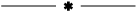
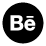

여백의 미

2023 / Typography
지금까지 해온 작업물 + 시안, 미완성한 과제, 그림 스케치 등등… 미완성 작업물들도 소개 포토샵, 일러레 등 파일 제목을 지정하지 않고 저장할 때의 파일명을 타이틀로 가져간다. 나의 고민과 작업 과정, 노력을 아카이브 한다는 개인적인 의미를 가진다. 컴퓨터 배경화면 같은 배경 위에 타이틀 창이 있고, 클릭하면 내용이 아래로 펼쳐진다(토글 활용) 클릭 앤 드래그로 각 창을 움직일 수 있도록 컨셉에 맞게 어지럽게 쌓여 있는 / 정리되지 않은 느낌을 지향 지금까지 해온 작업물 + 시안, 미완성한 과제, 그림 스케치 등등… 미완성 작업물들도 소개 포토샵, 일러레 등 파일 제목을 지정하지 않고 저장할 때의 파일명을 타이틀로 가져간다. 나의 고민과 작업 과정, 노력을 아카이브 한다는 개인적인 의미를 가진다. 컴퓨터 배경화면 같은 배경 위에 타이틀 창이 있고, 클릭하면 내용이 아래로 펼쳐진다(토글 활용) 클릭 앤 드래그로 각 창을 움직일 수 있도록 컨셉에 맞게 어지럽게 쌓여 있는 / 정리되지 않은 느낌을 지향 레퍼런스